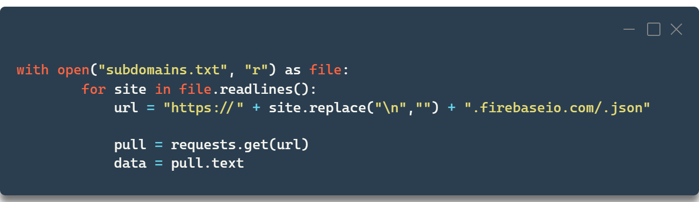

blog.vsim.xyz / blog Public
blog.vsim.xyz / blog Public
Fire-alarm,
Finding vulnerable databases in the wild.
to note;
Once again the writer of the article has no malicious intent. Deeds done have been done out of sheer curiosity and disclosures have been done responsibly where could.
Premise
The other day I found out firebase databases are sometimes left "open", meaning they're set up so that anyone can read the data inside. Testing a database is quite easy, as you can retrieve data from the database via http endpoints. To test a "firebase", you need to add /.json at the end of the url. If the endpoint responds with something other than an error, for example "null", the database is open. I'm not sure why it is, but sometimes the database just spits out it's contents upon said request. This leaves the possibility of "dumping" the whole database open. Given the firebase db's endpoint is {subdomain}.firebasio.com it is possible to just iterate through all of the public databases and check their read access. So we did.

Sieve of erasthothenes!
Statistics
And they didn't look too good. Going through some 3000 subdomains around 400 were read access. Most of these were simply junk, null, or nothing uninteresting, but around 50 of them included personal data. Here's some example snippets;
{ .. "name":"x","password":"x" .. }, {"email":"x@gmail.com","password":"x", .. }, {"name":"xxxxx","password":"xxxxxxxx"}
Some databases detailed had not only phonenumbers and email addresses, some included hundreds of addresses and names to go alongside of them. The open data pulled was around 3.3 gigabytes and the data after parsing the junk out around 495 megabytes.
We weren't the first to the scene
Interestingly, we were not the first to dork through the databases. If read access is left on, sometimes write access is aswell. In a few of these dumps you could find near the bottom a snippet:"Exploit":"Successfull",
"message":"Pwned",
"name":"3l1t_h@x0r"
}
Meaning someone else had been here prior to us. Checking the have I been pwnd it would appear as if most of these have not been either publicly leaked or disclosed, as many of the emails came up as not being in any leaks. I compiled the data into .json files arranged by the subdomain they got scraped from, and sent them to "haveibeenpwnd" for review.
Conclusions and Some numbers
Looking at the numbers here, we see that roughly speaking 10% of the scanned firebases were left open. A bit over 1% of the total had personal information included.
These numbers match this Forbes article, where Comparitech security analyzed a sample of 155,066 applications with Firebase. Out of the said applications, 7,5% were open and 2,7% leaked sensitive data.
The statistics are not an exact match. Our sample size of 3000 subdomains is vastly insufficient for meaningful extrapolating, but the sample of 155k is already something to go slightly off of. It's interesting however that since 2020 the amount of sensitive data leaked per database has seemingly gone down, whilst databases left open have increased in numbers. I suppose one explanation could be people using the services more for testing and building smaller prototypes. Leading into the total amount of both applications and misconfigured ones, while not increasing the amount of sensitive data.
When building applications, please, please configure them right. 2300 innocent bystanders have their email + password combo leaked due to poorly configured firebases. While that's not a lot, (especially compared to 11,936,681,242 accounts leaked in total according to haveibeenpwned) it would've been 100% preventable by setting read access correctly.